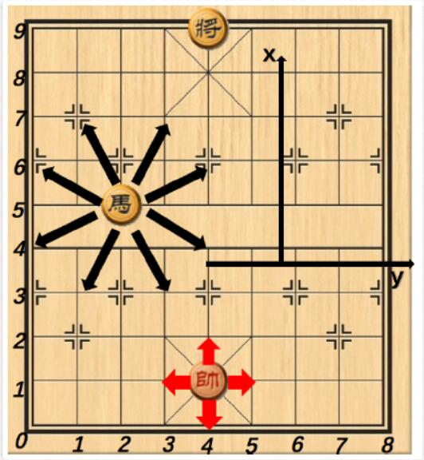
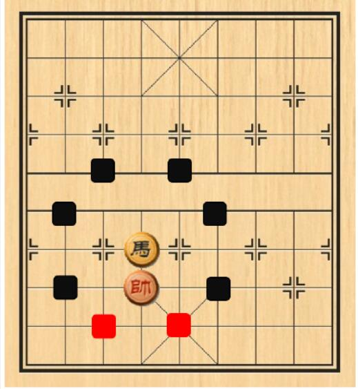

A. Resident Evil
The Umbrella Company has developed a new biochemical virus secretly. Lyon, a staff of the company, happened to find out the conspiracy and his company is now stopping him from discovering further evidence by releasing biochemical monster in his city (don’t ask me why the company is using this weird method).
The city can be described as an n*n grids. The Umbrella Company has 50 kinds of biochemical monster in total. The company will specify the type, quantity of biochemical monster and the rectangle area to put monster. For example, if the specified rectangle area has upper left corner (1, 1) and bottom right corner of (3, 3), and the company wishes to put 3 of A monster, 2 of B monster and 1 of C monster in it, then 3 of A monster, 2 of B monster and 1 of C monster is added to each and every grid inside the area.
However, Lyon risk his life of finding evidence by searching certain rectangle area. By doing this, all monsters inside the area would gather to him. He has two way of dealing with monster. If the number of a certain kind of monster is even, then he would choose to hide, otherwise withdraw.
Input
A line containing n and m (1<=n<=3000 1<=m<=100000). Representing the size of the city and the number of operations.
Then m lines of operation and there are only two kinds of operation.
Letter ‘P’ means to release monster, followed by 4 integers x1, y1, x2, y2 (1<=x1, y1, x2, y2<=n) , describing the upper left corner and bottom right corner of the area. Then an integer K(1<=K<=50), meaning there will be k pair of number (A, B) given next. A (1<=A<=50) indicates the kind of the monster and B (1<=b<=100000) indicates the number of this kind being added to this area.
Letter ‘Q’ represents the query operation, followed by 4 integers x1, y1, x2, y2 (1<=x1, y1, x2, y2<=n), describing the upper left corner and bottom right corner of the area.
Output
For every ‘Q’ operation. Print 50 number in a line, meaning the kind of action he would take for different kinds of monsters. 1 represents hiding and 2 represents withdrawing.Sample Input
2 2
P 1 1 2 2 1 1 1
Q 1 1 1 1
Sample Output
2 1 1 1 1 1 ........1 （one '2' and forty-nine '1'）
B. List wants to travel
A boy named List who is perfect in English. Now he wants to travel and he is making a plan. But the cost of living in same citie always changes. Now he wants to know how many different kinds of continuous same cost he has to pay for living between two cities. Can you help him? (He is so lazy to do this by himself.)Input
There are multiple cases. The first line contains two positive numbers N and M(N (N<=40000) where N is the amount of cities and M (M<=50000)) is the amount of operations.Then N-1 lines where each line have 3 integers a b and c, representing that there is a bidirectionoal road between city a and city b, and the cost is c.(a != b and c <= 100000). Then there are M lines of operation. For example, "Change a b c" means changing all the costs of the road which are passed by him when he travels from city a to city b to c. "Query a b" means he wants you to tell him how many different kinds of continuous same cost he has to pay traveling from city a to city b.(if a == b, the cost is 0).Output
He insure you that there is exactly one route between every two different cities.Sample Input
9 3
1 2 2
2 3 1
1 7 2
1 4 2
3 5 2
3 6 1
5 8 2
5 9 3
Query 1 8
Change 2 6 3
Query 1 6
Sample Output
3
2
C. hannnnah_j’s Biological Test
hannnnah_j is a teacher in WL High school who teaches biology.
One day, she wants to test m students, thus she arranges n different seats around a round table.
In order to prevent cheating, she thinks that there should be at least k empty seats between every two students.
hannnnah_j is poor at math, and she wants to know the sum of the solutions.So she turns to you for help.Can you help her? The answer maybe large, and you need to mod 1e9+7.
Input
First line is an integer T(T≤1000).
The next T lines were given n, m, k, respectively.
0 < m < n < 1e6, 0 < k < 1000
Output
For each test case the output is only one integer number ans in a line.Sample Input
2
4 2 6
5 2 1
Sample Output
0
5
D. Mathematician QSC
QSC dream of becoming a mathematician, he believes that everything in this world has a mathematical law.
Through unremitting efforts, one day he finally found the QSC sequence, it is a very magical sequence, can be calculated by a series of calculations to predict the results of a course of a semester of a student.
This sequence is such like that, first of all,$f(0)=0,f(1)=1,f(n)=f(n-2)+2*f(n-1)(n\geq 2)$Then the definition of the QSC sequence is $g(n)=\sum_{i=0}^{n}f(i)^2$. If we know the birthday of the student is n, the year at the beginning of the semester is y, the course number x and the course total score s, then the forecast mark is $x^{g(n*y)}\%(s+1)$.
QSC sequence published caused a sensation, after a number of students to find out the results of the prediction is very accurate, the shortcoming is the complex calculation. As clever as you are, can you write a program to predict the mark?
Input
First line is an integer T(1≤T≤1000).
The next T lines were given n, y, x, s, respectively.
n、x is 8 bits decimal integer, for example, 00001234.
y is 4 bits decimal integer, for example, 1234.
n、x、y are not negetive.
1≤s≤100000000Output
For each test case the output is only one integer number ans in a line.Sample Input
2
20160830 2016 12345678 666
20101010 2014 03030303 333
Sample Output
1
317
E. Running King
In People's Republic Of Running, people are crazy about runnning. They keep a habit of running everyday, especially the Head King, because he isn't confident about his figure (please don't tell him~).
The Head King is going to build a new city, which contains $N$ towns. He want to build some bidirectional roads between some of the towns (each road connect two towns) and choose some of them to form his private running route. The Head King can't accept more than one bidirectional roads between two towns, because he has no sense of direction and it will make him bemused. He prefers enjoying the landscape changing while running, so he can't stand any same road on his running route.
Now, the Head King wants to know the total number of scheme of road constructing. Every scheme satisfies that there exist a town for him both to start and finish running(the running route contains at least one road). Please note the towns in the city needn't to be connected to each other.Input
First line contains $T(T \leq 10)$, the number of test cases.
For each case, there is one single line containing one non-negative integer $N(n \leq 2e5)$.
It is guarantee that there are at most one case in which $n \geq 1000$
Output
For each test case, output a single number —— the number of schemes modulo the population of King's country($1004535809$).Sample Input
3
2
3
4
Sample Output
0
1
26
F. The Game
Alice and Bob like playing Chinese Chess. One day they are playing a game: Alice has a General, Bob has a General and a Horse, they both obey the rules of Chinese Chess, which are:
$\bullet $ General has 4 moving directions, Horse has 8 moving directions, but they can't move out of the chess board or their own moving areas. See the picture to get more details:

$\bullet $ In some circumstances, Horse can't move to all his positions, just as you can see in the picture, it can move to the black positions, but can't move to the red positions:

$\bullet $ Two Generals can eat each other if and only if they have the same y-coordinate and Horse is not between them.
(For more information, click http://https://en.wikipedia.org/wiki/Xiangqi)
One is considered to be the winner only when his enemy's General is eaten. Please note that if the game is a tie, Alice is considered to be the winner. If Alice know that she has no chance to win the game at the beginning, she will take the strategy to make the game last more steps. If Alice can't win, Bob want to end the game as soon as possible.
If Alice win the game, output "Lucky guy!", else output "Lose in x steps T.T!", x indicates the number of steps they take (the sum of Alice's and Bob's steps). Suppose they all make best strategies.
Input
7 numbers $x_1,y_1,x_2,y_2,x_3,y_3,p$, where:
$\bullet $ $(x_1,y_1)$indicates the coordinate of the Bob's Horse $(0 \leq x_1 \leq 9, 0 \leq y_1 \leq 8)$;
$\bullet $ $(x_2,y_2)$indicates the coordinate of the Bob's General $(7 \leq x_2 \leq 9, 3 \leq y_2 \leq 5)$;
$\bullet $ $(x_3,y_3)$indicates the coordinate of the Alice's General $(0 \leq x_3 \leq 3, 3 \leq y_3 \leq 5)$;
$\bullet $ $p$ indicates the people who moves first, 0 for Alice, 1 for Bob.Output
If Alice win, output "Lucky guy!" (without quotations), else output “Lose in x steps T.T!”, x indicates the number of steps they take (the sum of Alice's and Bob's steps).Sample Input
5
0 0 9 3 0 3 0
2 6 9 5 2 3 1
0 4 7 3 1 4 0
3 2 7 4 1 3 0
3 2 7 4 1 3 1
Sample Output
Lucky guy!
Lose in 3 steps T.T!
Lucky guy!
Lose in 4 steps T.T!
Lose in 1 steps T.T!
G. odd-even number
For a number,if the length of continuous odd digits is even and the length of continuous even digits is odd,we call it odd-even number.Now we want to know the amount of odd-even number between L,R(1<=L<=R<= 9*10^18).Input
First line a t,then t cases.every line contains two integers L and R.Output
Print the output for each case on one line in the format as shown below.Sample Input
2
1 100
110 220
Sample Output
Case #1: 29
Case #2: 36
H. oasis in desert
There are N oases connected by M roads in the desert,and each road is L km long.Now a traveler who can at most walk K km with his supplies.
We define two concept now:
1.The Biggest Dangerous Oasis List: For every pair of oases in the list,their minimum distance should be longer than K km.And the size of The Biggest Dangerous Oasis List is biggest among lists which meet the condition.
2.The Smallest Safe Oasis List:for every pair of oases in the desert,if their minimum distance is shorter than K km,the list should contain at least one of them .And the size of The Smallest Safe Oasis List is smallest among lists which meet the condition.
Now the traveler wants to get a list which is both The Biggest Dangerous Oasis List and The Smallest Safe Oasis List.
Input
There is a t in the first line,means k cases.In each case,there is firstly n (0<= n <= 500 ),m(0<=m<=n*(n-1)/2) and k(0<=k<=100000).Then m lines, each line input a,b(1<=a,b<=n),and l(0<=l<=100000),means there is a road which is l km long between a and b.Output
for each case,firstly the size of the list,then print the oases in the list in increasing order,separated by spaces.
If there are multiple answers, print the lexicographically smallest one.
If there is no list, output "Impossible"Sample Input
1
6 7 30
1 2 40
1 3 20
1 4 30
2 3 15
5 3 20
5 6 20
3 6 50
Sample Output
3
1 2 5
I. QSC and Master
Every school has some legends, Northeastern University is the same.
Enter from the north gate of Northeastern University，You are facing the main building of Northeastern University.Ninety-nine percent of the students have not been there，It is said that there is a monster in it.
QSCI am a curious NEU_ACMer，This is the story he told us.
It’s a certain period，QSCI am in a dark night, secretly sneaked into the East Building，hope to see the master.After a serious search，He finally saw the little master in a dark corner. The master said：
“You and I, we're interfacing.please solve my little puzzle！
There are N pairs of numbers，Each pair consists of a key and a value，Now you need to move out some of the pairs to get the score.You can move out two continuous pairs，if and only if their keys are non coprime(their gcd is not one).The final score you get is the sum of all pair’s value which be moved out. May I ask how many points you can get the most？
The answer you give is directly related to your final exam results~The young man~”
QSC is very sad when he told the story，He failed his linear algebra that year because he didn't work out the puzzle.
Could you solve this puzzle?
（Data range：1<=N<=300
1<=Ai.key<=1,000,000,000
0<Ai.value<=1,000,000,000）
Input
First line contains a integer T，means there are T(1≤T≤10) test case。
Each test case start with one integer N . Next line contains N integers，means Ai.key.Next line contains N integers，means Ai.value.
Output
For each test case,output the max score you could get in a line.Sample Input
3
3
1 2 3
1 1 1
3
1 2 4
1 1 1
4
1 3 4 3
1 1 1 1
Sample Output
0
2
0
J. Count primes
Easy question! Calculate how many primes between [1...n]!Input
Each line contain one integer n(1 <= n <= 1e11).Process to end of file.Output
For each case, output the number of primes in interval [1...n]Sample Input
2
3
10
Sample Output
1
2
4